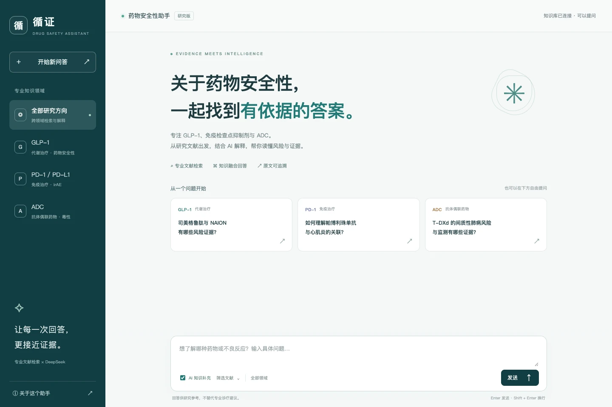

OVERVIEW
从真实问题出发。
面向 GLP-1、PD-1/PD-L1 与 ADC 的药物安全问题，连接文献检索、结构化回答与原文溯源。
56份原始文献
1,327个结构化片段
公开网页为关键词检索演示版；简历所述完整工程版本采用混合检索链路。
PRODUCT DESIGN
把复杂留在背后。
药物安全信息分散在研究文献中，需要把回答与可核查的证据连接起来。
- ↗文献证据检索
- ↗引用与页码溯源
- ↗结构化回答
PROCESS
连接每一步。
- 文献解析与质控
- 章节感知切片
- 混合检索与重排
- 循证生成
- 引用溯源
查看技术与版本说明 ＋
公开网页为关键词检索演示版；简历所述完整工程版本采用混合检索链路。
相关技术：RAG · DeepSeek · FastAPI。流程图为项目组织方式的概括，具体实现与运行要求以项目文档为准。
RESULTS & SCOPE
让结果可查看。
完成知识组织、检索与循证回答的工程实践。文献与片段数量来自本人简历，当前展示未重新运行完整评测。
体验产品